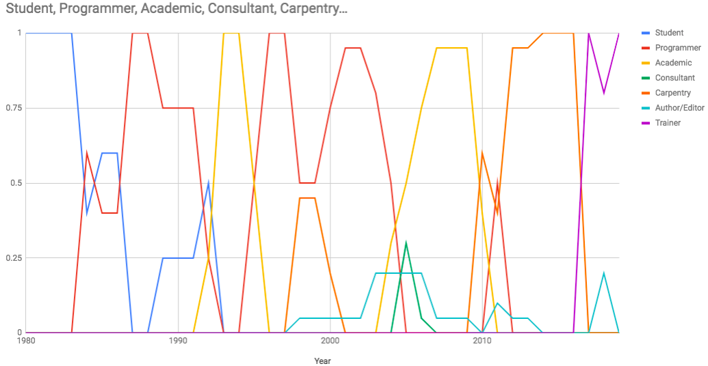
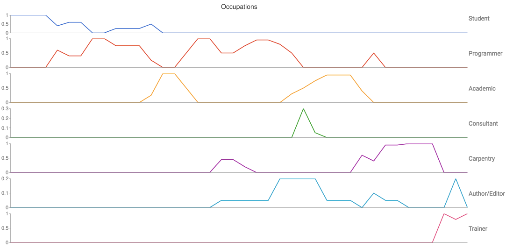

Occupations
There are some threads right now on Twitter and on various forums I belong to about life after grad school—more specifically, about how little support grad students are given to figure out what they could or should do if they’re part of the 80% who won’t wind up in academia. It all came to a head when someone messaged me privately to say, “I don’t know enough to decide what to do with the rest of my life.”
To which my reply is, “You don’t have to.” My father had five paying jobs in his entire adult life, three of which were teaching in public schools. I’ve had that many jobs in the last five years, all different, and that variety is now normal for most people I know. A post-doc, a six-year grind to tenure, and then twenty or thirty years as a professor at the same institution is now a vanishingly rare trajectory. The charts below show where my time has gone since 1980, and that you can have a fulfilling career moving back and forth between different roles and domains. I think it’s about time university faculty focused on preparing their students for this kind of life.

